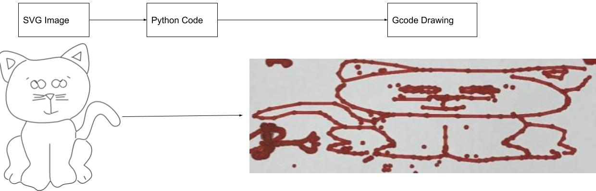

Creating a Python library for turning SVG Images into Drawable Gcode

Our team decided to communicate between our computers and the Arduino by sending individual G-code commands via serial to the Arduino from Python. This introduces the challenge that all information we would like ArtBot to draw on the paper or any information we would like to send it must be able to be sent one line at a time using the Gcode file format.
To write a G-code file you first need to understand how they are formatted. G-code is a text based file format that conveniently conveys one individual Gcode command per line of text in a file. There are no special headers or footers in G-code, every line follows the same format. A general line of G-code will look like “GA XB YC ZD,” where A is the specific G-code command you are running, and B, C, and D are either floats or integers that represent X,Y, and Z coordinates. If it is not desirable to move in one of the axes, that specific portion of the line may be omitted.
There are many possible G-code commands one can send, though the most common are G0 and G1 which will function with the arguments listed above and tell ArtBot to move in a straight line. In addition to G0 and G1, there is the G3 command (G28 in standard Gcode terminology) for homing the gantry to the origin. It is worth noting that for computational simplicity, nearly all G-code programs represent all curves as straight line paths and so only being able to write straight line commands is not a limitation of the robot.
Knowing the G-code file format, we are able to very simply write lines of code to a file from Python provided we have a list of points we would like the ArtBot to travel between. This effectively means that we can generate G-code from any arbitrary parametric curve, which is an incredibly powerful tool. We can even tell the Art Bot to pick up and put down the pen at specific times.
While we can now generate Gcode files from arbitrary points and curves, there is the non-trivial problem of turning an image into a set of these points. Luckily, there exists a type of image file format that is made up of a list of linked curves called an SVG, or Scalable Vector Graphic.
SVG’s are also a text based file format but are considerably more complicated than G-code files. SVG’s have many different types of commands including polylines, raw points, and most notably paths. Paths are an incredibly powerful tool that can represent images in terms of straight lines and cubic bezier curves.
Unfortunately the nonstandard nature of SVG files means that a valid SVG can use extremely strange spacing and comma usage as well as mixes of integer, float, and even scientific notation, all of which need to be standardized into a usable form by our program. Because of the messy nature of SVG files, our program involves substantial data cleaning of path commands.
Now that we know what to look for in a file, we must split our path into lists of commands from which to generate points.
A path command might look like this:
path d=”m 15-4 he-5 -0c25,-1,0.0-2,10 H15 L25Z”The above example was meant to illustrate how complicated a path command can be. In addition to the spacing concerns listed above you might notice a mix of capital and lowercase letters in the lines. A capital letter represents a command in absolute coordinates whereas a lowercase letter represents a point relative to the current position in the image. Because Gcode has no sense for absolute vs relative commands, in the process of parsing all commands are transferred to absolute coordinates.
You might also notice that different letter commands have different numbers of arguments that need to be parsed, for example m/M and l/L take two arguments, c/C takes six, z/Z takes none and h/H only takes one. This must also be considered when parsing a path line.
It is also possible to link together curves with shorthand, for example:
L 5 10 15 20 L 5 10 L 15 20With this information we are able to split any SVG into lists of individual commands from which we can generate points. Once we have a list of these commands and their arguments, we can also scale an image up or down by multiplying each argument from an SVG command by a specified value. If we want to scale to the size of our draw bed, we must simply scale the image based on its bounding box which we can find in the SVG file.
Each letter corresponds to some different simple geometric feature which once parsed, can be easily turned into Gcode. It is worth noting specifically that the m/M command signals when it is necessary for the pen to be picked up or put down.